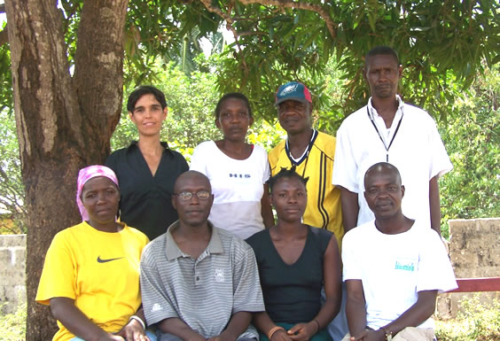
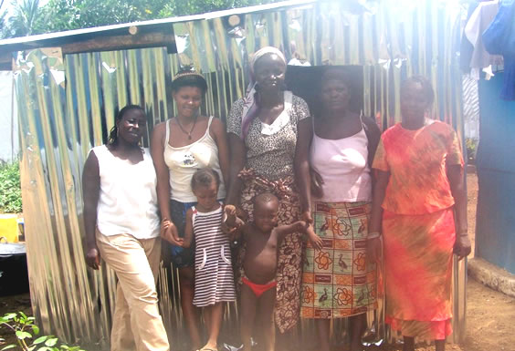

A Rudolf Steiner School
Contact Us
Goderich Waldorf
Freetown, Sierra Leone
“Our highest endeavour must be to develop free human beings who are able of themselves to impart purpose and direction to their lives.”Rudolf Steiner


Get involved...
The Staff of Goderich Waldorf School
Goderich Waldorf School Faculty 2007-2008 (from top left): Suzanne Lamb, Susan Taylor, Amara Suaray, Robert Bendu (from bottom left): Aminata Bendu, Shannoh Kandoh, Clarisa Bangura, Mohamed Conteh.
Goderich Waldorf School Cooks 2007-2008 (from second from the left) Fatmata, Fatu, Mariatu.